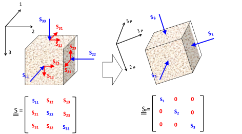
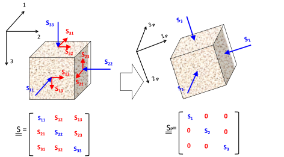

Next: The isotropic solid in Up: Constitutive equation: stress-strain relationships Previous: Constitutive equation: stress-strain relationships Contents
Consider a prismatic solid with length  to which we apply a stress
to which we apply a stress
 on top face 3 (Figure 3.10).
The bottom face is not allowed to move in direction 3 but can slide sideways.
The four other faces are free to move in all directions.
Notice that the top face can also deform in directions 1 and 2.
The Young modulus
on top face 3 (Figure 3.10).
The bottom face is not allowed to move in direction 3 but can slide sideways.
The four other faces are free to move in all directions.
Notice that the top face can also deform in directions 1 and 2.
The Young modulus  is defined as the ratio between the applied stress
and the resulting strain (in the direction of the applied stress)
is defined as the ratio between the applied stress
and the resulting strain (in the direction of the applied stress)

 ) and the strain in the direction of the applied stress
These two coefficients are the two coefficients conventionally used as elasticity constants in continuum mechanics.
We will see later that in the subsurface we almost never find conditions of laterally “unconfined” stress loading.
) and the strain in the direction of the applied stress
These two coefficients are the two coefficients conventionally used as elasticity constants in continuum mechanics.
We will see later that in the subsurface we almost never find conditions of laterally “unconfined” stress loading.
![\includegraphics[scale=0.65]{.././Figures/split/4-14.pdf}](img276.svg) |
The real behavior of rocks differs from the linear elastic assumption.
Figure 3.11 shows an schematic representation of a typical unconfined loading test.
The figures plots axial stress  in the vertical axis and axial strain
in the vertical axis and axial strain
 in the horizontal axis.
Often, rock plugs are not perfectly parallel or may have some microcracks.
Both features make the initial loading look less stiff than the actual rock stiffness.
After the initial loading, the rock may show a linear response -where the Young modulus is measured- followed by softening approaching rock failure and the peak stress.
When the test is performed under unconfined conditions, the peak stress is termed the “unconfined compressive strength (UCS)” of the rock (further explained in Section 4).
The Poisson ratio can be measured in the same range of the measurement of when lateral strain transducers are available.
in the horizontal axis.
Often, rock plugs are not perfectly parallel or may have some microcracks.
Both features make the initial loading look less stiff than the actual rock stiffness.
After the initial loading, the rock may show a linear response -where the Young modulus is measured- followed by softening approaching rock failure and the peak stress.
When the test is performed under unconfined conditions, the peak stress is termed the “unconfined compressive strength (UCS)” of the rock (further explained in Section 4).
The Poisson ratio can be measured in the same range of the measurement of when lateral strain transducers are available.
EXAMPLE 3.2: Compute the (axial) strain expected for a rock subjected to 3000 psi of (axial) stress under unconfined axial loading for:
SOLUTION
Let us work in SI units:
 psi
psi MPa
MPa MPa
MPa

 GPa
GPa
 GPa
GPa
Notice that rocks can be quite stiff and even for an effective stress as large as 3000 psi (equivalent to a depth onshore of 5000 ft under hydrostatic pore pressure), the deformation is in the order of 1 percent to 1 thousandth or less.